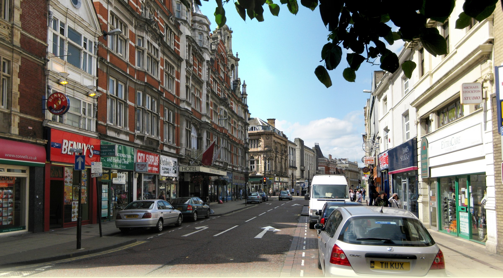

Beat 01: a toggle
Granby Street, 2009. The tall building is the Grand Hotel. See the same corner about 1903.
The postcard is on top in the HTML. gsap.from()
hides it as the page loads, then each button tells it which way to
play.
The code
In index.html, inside the beat:
<button type="button" id="button-then">See it about 1903</button>
<button type="button" id="button-now">Back to 2009</button>In js/main.js:
const swap = gsap.from("#pic-1900s", {
opacity: 0,
duration: 1,
ease: "none",
paused: true // wait to be told
});
document.querySelector("#button-then")
.addEventListener("click", function () {
swap.play();
});
document.querySelector("#button-now")
.addEventListener("click", function () {
swap.reverse();
});Play, reverse or restart
swap.play() plays it forwards, once.
swap.reverse() plays it backwards, to the start.
swap.restart() plays it from the start on every
click: a dice roll, a spray, a flash.